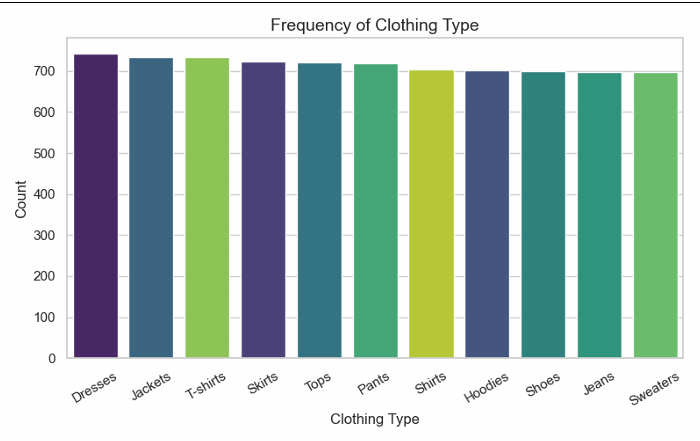
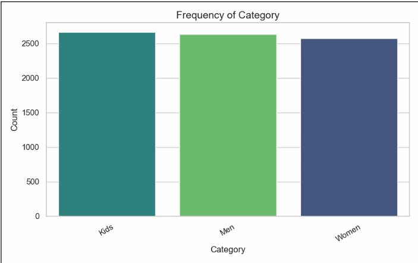
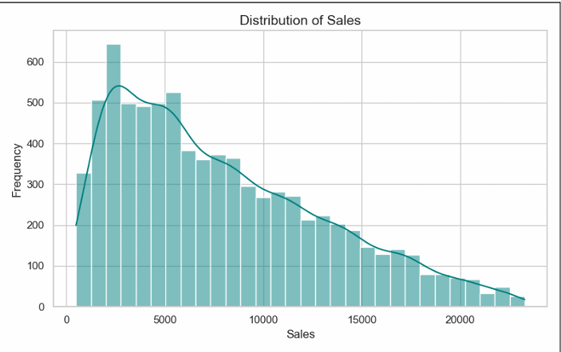
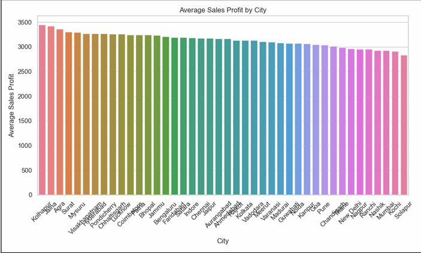
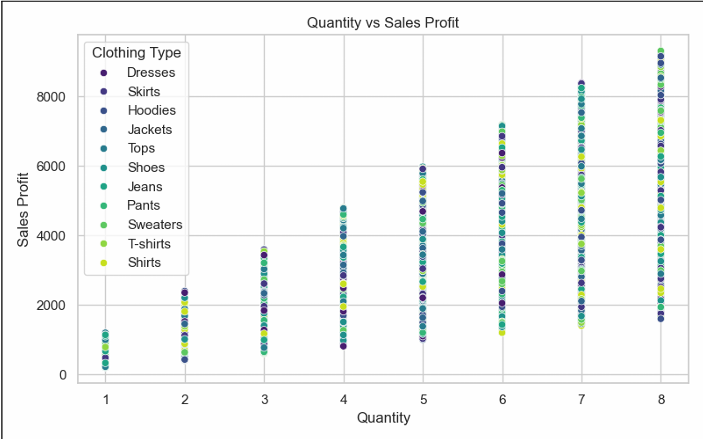
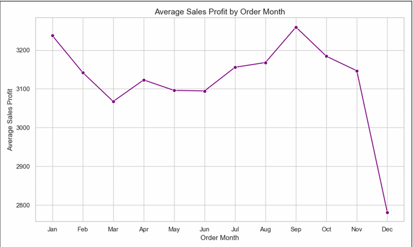
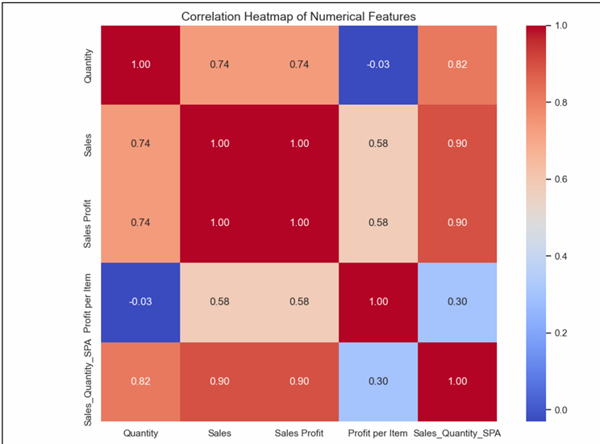
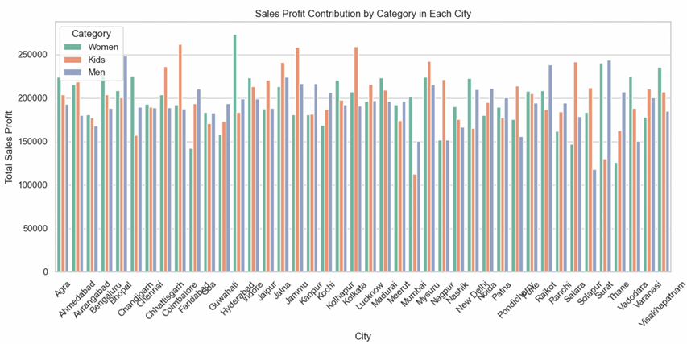
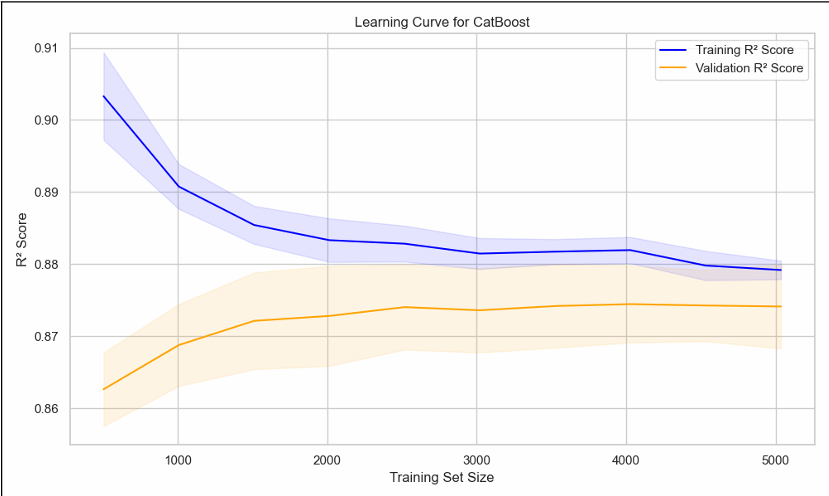
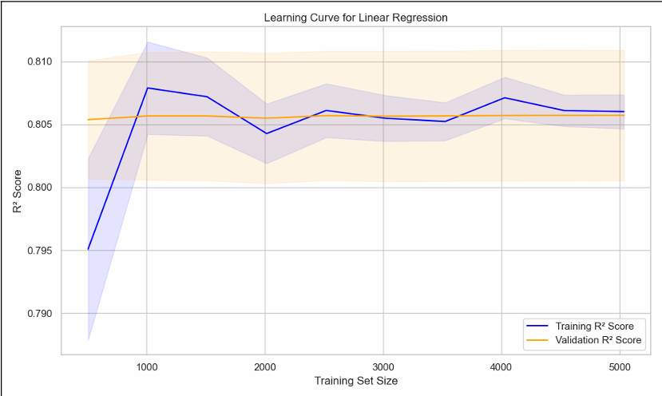

RETAIL DATA SCIENCE PROJECT
Predicting sales profit across 7,899 transactions using CatBoost, XGBoost & LightGBM — 0.874 cross-validated R².
Transactions Analyzed
Cities Covered
Best CV R² Score
ML Models Compared
Analyze store & order-level attributes to identify sales trends and predict future sales profit, aiding inventory planning and regional strategy.
Mode imputation, IQR-based outlier removal (29 outliers in Sales Profit), and corrupt date handling on a 28-column raw dataset.
Store Age, Order Weekday, Profit per Item, Target/Label-Count Encoding, and a custom Statistical Polynomial Aggregate (SPA) feature.
CatBoost — Avg. CV R² of 0.8742, with converged training/validation learning curves (minimal overfitting).
Univariate, bivariate & multivariate insights from the dataset.








5 regression models evaluated via test R² and 5-fold cross-validation.


A simplified, client-side estimator inspired by the project's feature-importance findings (Quantity, Profit-per-Item, City). Illustrative only — not the deployed CatBoost model.
Estimated Sales Profit